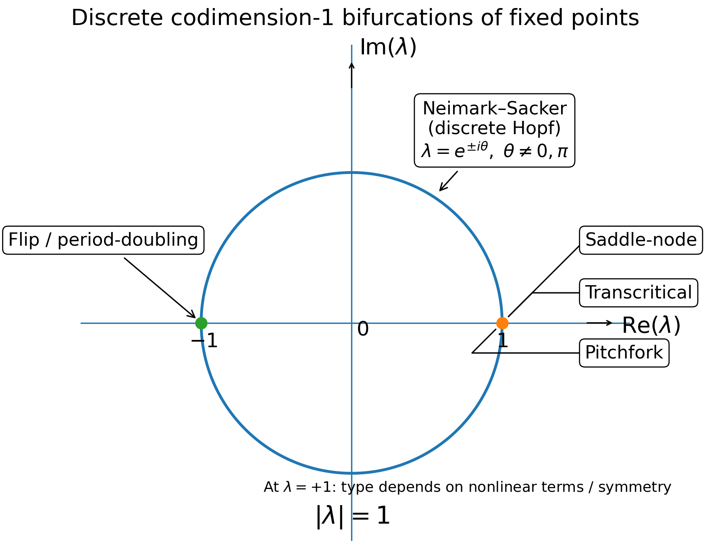
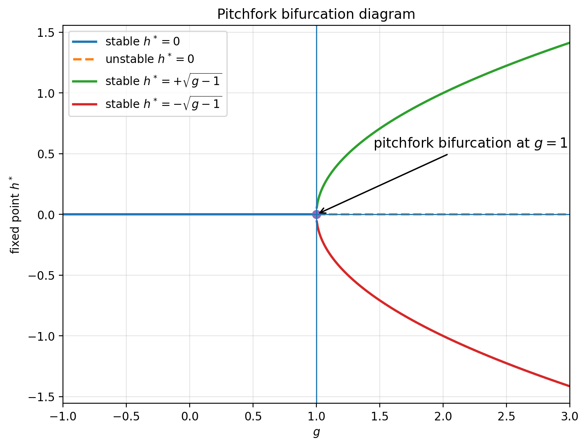
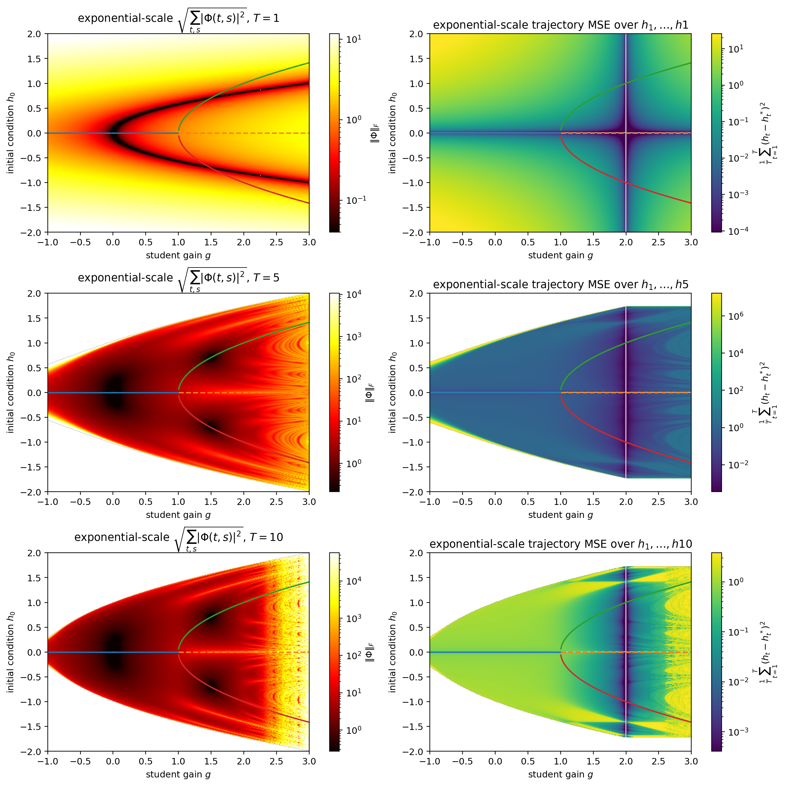

Bifurcations During GD: Fractal Tunnel Vision!
| Relevant Links | |
| Workshop Pre-Print | Pip Pytorch Package |
We train a dynamical system with gradient descent (GD) and look at the loss and what do we see? A bunch of sudden loss drops, periods of slow learning, and, often the case, a crappy final loss. Prior work showed that the drops can coincide with dynamical bifurcations: an event in which the dynamics change very suddenly, e.g., a fixed point splits into multiple fixed points or a limit cycle.
We will discuss discrete dynamical systems of the form $$h_{t+1} = f(h_t, \theta)$$ where the task is specified by the choice of sample initial conditions, to evaluate the model on, as well as some loss function, mapping trajectories to a scalar loss. Specifically, assuming each trajectory has \(T\) timesteps, there are \(B\) initial conditions (batch size) and \(h_t \in \R^n\), then the global state here is a 3-tensor in \(\hs H := \R^{B \times T \times N}\).
But what about task structure? E.g., can we account for a dynamical system of the form $$h_{t+1} = f(h_t, \theta, x_t)?$$ Well, if we define a new state \(v := \text{cat}(h, x)\), expanding the state-space, assuming \(x_t\) has its own discrete dynamics, this matches the form above. I.e. we can fold task inputs into the model. This is a little bit less simple from the gradient flow perspective since \(x\) does not technically evolve over GD, but for now let's just use the form above and forget about it.
Summary/Structure of this Blog
How should we understand bifurcations?
(1) I'll turn to normal forms, examining learning under GD in these very simple, scalar-valued, cases.
(2) After that, I'll discuss high-dimensional models, showing that the normal form analysis is not meaningless: just as they often match the projected behavior of a high-D model at a bifurcation, I'll argue that bifurcations funnel GD in such a way that they describe the local learning dynamics pretty well in a dramatically reduced, low-rank way.
Crucial to this will be three notions: parameter locality, describing how close the parameters are to a bifurcation, state-space sample locality, quantifying how far a bifurcation is from the relevant sample GD trajectories and finally residual dynamics, accounting for the non-bifurcation relevant dynamics of the model near a bifurcation during GD.
(3) Finally, I'll examine in detail the consequences of bifurcations, arguing that they collapse learning geometry locally, causing a slowdown of learning in all non-bifurcation relevant parts of a task, misdirecting error signals.
Practically, this implies that the order in which task components are learned matters.
Reviewing Normal Forms
To understand bifurcations, the natural tool is the normal form, which is a simple model capturing a bifurcation's behavior.
The classical bifurcations that occur most frequently (from a "this event requires few things to line up" perspective) are the codimension-one bifurcations.
These occur when, local to a fixed point \(\bar h\), where \(f(\bar h, \bar \theta) = 0\) for some \(\bar \theta\), the Jacobian \(D_h f(\bar h, \bar \theta\)\) has an eigenvalue pass through the unit circle, \(|\lambda| = 1\) in the complex plane.
In continuous time, the condition is instead a crossing of an eigenvalue through zero.
Correspondingly, there are actually only at most six unique codimension-one bifurcations for a discrete non-linear dynamical system, and four for a continuous-time non-linear dynamical system.
Here's a simple figure laying out the discrete ones.
 Fig 1 Classifying discrete bifurcations.
{kind=link}
Here's a table of the normal forms, all laid out so that the bifurcation happens at critical parameter \(\bar g = 1\):
| Name | Normal form, bif at \(\bar g = 1\) | Behavior after \(\bar g > 1\) |
|---|---|---|
| Saddle-node | \(h_{t+1} = h_t + (\bar g - 1) - h_t^2\) | Two fixed points appear: one stable, one unstable. |
| Transcritical | \(h_{t+1} = \bar g h_t - h_t^2\) | Same number of fixed points, but they exchange stability. |
| Pitchfork | \(h_{t+1} = \bar g h_t - h_t^3\) | Two new stable fixed points appear: \(h^* = \pm\sqrt{\bar g - 1}\). The origin becomes unstable. |
| Flip | \(h_{t+1} = -\bar g h_t + h_t^3\) | Fixed point stays the same, but loses stability; a stable period-2 orbit appears. |
| Neimark–Sacker | \[ z_{t+1} = \bar g e^{i\omega} z_t - |z_t|^2 z_t \] | Fixed point stays the same, but loses stability; an invariant circle / quasiperiodic orbit appears. |
GD Learning for Scalar-Valued Normal Forms
Normal forms can be written $$h_{t+1} = f(h_t, g)$$ where \(h_t\) here is a scalar and so is \(g\). We assume \(\bar g = 1\) produces the bifurcation. Typically, one then draws a bifurcation diagram, plotting, versus \(g\), the fixed points of the normal form. Here is the pitchfork example (big surprise, it looks like a pitchfork!):
{kind=link}

Fig 2 Fixed points of the pitchfork.
For this section, we'll examine this specific example in some depth. Recall it has $$f(h, g) = g h - h^3$$ yielding a state derivative (Jacobian), $$D_h f = f'(h) = g - 3 h^2$$
Given a given \(h_0\) initial condition (IC), which we can visualize as the \(y\)-axis in this plot, the model will evolve so as to fall onto one of the fixed points (FPs). Specifically, for \(g\) below \(1\), the dynamics converge to \(0\) irregardless of \(h_0\), and for \(g > 1\), the trajectory converges to one of the two stable branches, repulsed by the unstable FP at zero.
Training But what if we trained the model? For example, consider a student-teacher setup, where we have two models with identical normal form dynamics $$h_{t+1} = f(h_t, g)$$ but with the student initialized so that \(g = g_0\) and with fixed teacher parameter \(g = g^*\). We denote the student by \(h_t\) and teacher by \(h_t^*\), simulating both for \(T-1\) timesteps on the same IC (or ensemble of ICs) and define a loss based on how much they match. For example, assuming a single IC for simplicity, we define a running MSE loss $$L(h) := \frac{1}{2}\mathbb{E}_{t=0}^{T-1} [ \| h_t - h_t^*\|^2]$$ or a terminal loss just comparing the final times. I'll prefer and use the former here. With this loss acquired, we can run GD on \(g\). This is a nice setup because it's clear that the simplest solution is to continuously push \(g\) from \(g_0\) to \(g^*\), but, since the loss compares trajectories, not parameters, we can quantify how much GD is biased and screws up this task.
Let's examine the loss landscape of the task, which depends on the choice of \(g\), the timeframe \(T\) and the sample IC \(h_0\). One final thing before that though. We define \(\op P\) as the Green's operator on \(R^{1 \times T \times 1}\) defined as the block matrix $$\op P = \begin{pmatrix} \Phi(0, 0) & 0 & \dots & 0 \\ \Phi(1, 0) & \Phi(1,1) & \dots & 0 \\ \vdots & \vdots & \ddots & \vdots \\ \Phi(T-1, 0) & \Phi(T-1, 1) & \dots & \Phi(T-1, T-1) \end{pmatrix}$$ where \(\Phi(t, s)\) is the state-transition matrix, \(\Phi(t, s) = d h(t) / d h(s)\), which is scalar valued in this normal form case. Here, \(\op P\) is simply a \(T\) by \(T\) matrix, and it describes the linear integration of perturbations to the forcing, i.e. \(\op P : \delta f \mapsto \delta h\). Crucially, we have in this case $$\delta g = \mathbb{E}_{t=0}^{T-1} [h_t a_t] \text{ using the adjoint signal } a := \op P^T (h^* - h)]$$ In non-scalar cases, we instead have an outer product. See my previous blog for more details. We define the amplification landscape by simply measuring \(\|\op P\|_F = \sqrt{\sum_{0\leq s \leq t}^{T-1} \|\Phi(t, s)\|_F^2}\), where the Frobenius norm is just absolute value in this scalar simple case. The cool thing is that the operator \(\op P\) does not care about the task error, so the landscape tells us generally "how steep is learning at this point," and, in higher-D cases, how biased/stiff is it towards only a few modes.
Below, I plotted the amplification, \(\| \op P\|_F\), as well as the loss landscape for the pitchfork, with teacher parameter \(g^* = 2\) fixed. Amazingly, this very simple scalar-valued state and parameter case yields wild, fractal patterns in the amplification landscape and consequently the loss landscape.
{kind=link}

Fig 3 Amplification landscape (left) and loss landscape (right) for the pitchfork. Rows correspond to choices of \(T\), the timesteps of evaluation. In each plot, the vertical axis corresponds to \(h_0\) IC choice, while the horizontal corresponds to \(g\) value. Loss is evaluated with teacher \(g^* = 2\) fixed. White regions correspond to nan/inf. Lines illustrate FPs, as in the previous figure.
These plots tell us a lot. E.g, (1) there is a region (the white parts) where learning with that IC and \(g_0\) value is doomed to fail from extreme exploding gradients. (2) This same phenomenom is also an issue for large \(g\), irregardless of the teacher \(g^*\), also exhibiting chaos and exploding in that region. (3) Furthermore, the loss landscape approaching from the right is hard to traverse and from the left there is a sudden jump around the upper and lower fixed point boundary.
One might think that the amplification is determined by asymptotics, but this is surprisingly untrue. Specifically, all asymptotic paths (except at \(h = 0\) with \(g > 1\)) converge to a stable FP with Jacobian smaller than 1, so that $$\lim_{T \rightarrow \infty} \Phi(T, s) = 0$$ so the amplification \(\op \| P\|_F\) is determine by the transient period in which the dynamics are far enough from a stable FP so that the Jacobians involved actually contribute something that makes it not collapse.
Here, you can play with the landscape for the \(T = 5\) case.
Fig 4 Amplification surface for T = 5 (link).